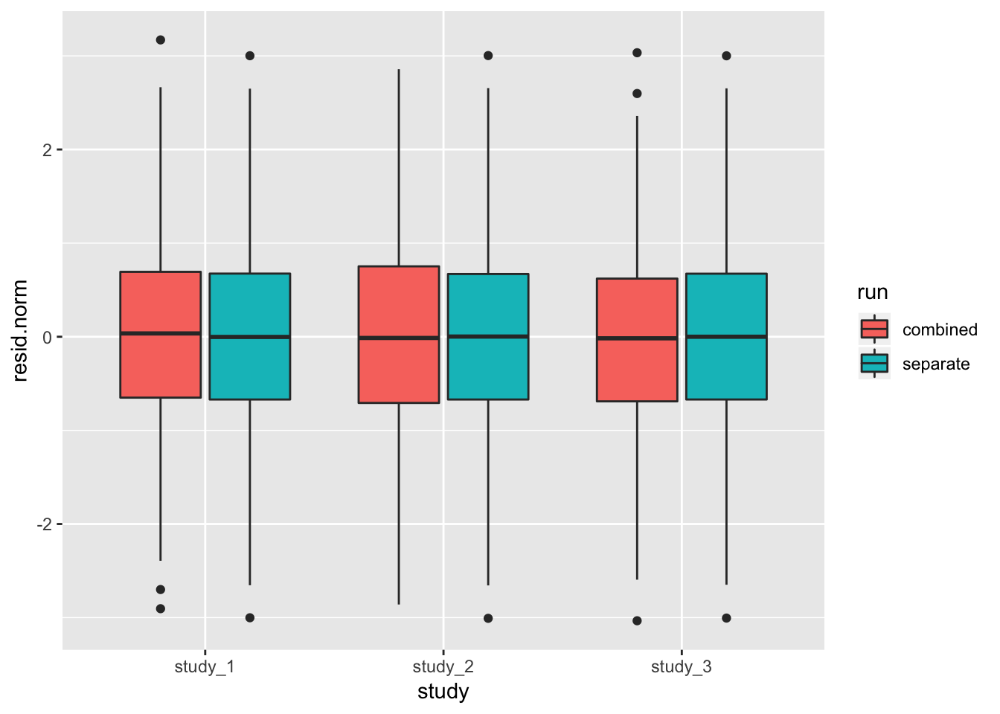

5 Association tests - Solutions
- Logistic regression:
fitNullModelcan use a binary phenotype as the outcome variable by specifying the argumentfamily=binomial. Use thestatuscolumn in the sample annotation to fit a null model for simulated case/control status, withsexandPopulationas covariates. Then run a single-variant test using this model.
nullmod.status <- fitNullModel(annot, outcome="status", covars=c("sex", "Population"),
family=binomial, verbose=FALSE)
resetIterator(iterator, verbose=FALSE)
assoc <- assocTestSingle(iterator, nullmod.status, test="Score")## # of selected samples: 1,126head(assoc)## variant.id chr pos allele.index n.obs freq Score
## 1 1 1 970546 1 1126 0.0039964476 0.20256722
## 2 2 1 985900 1 1126 0.0492895204 -2.64169956
## 3 3 1 1025045 1 1126 0.0004440497 -0.09916904
## 4 4 1 1265550 1 1126 0.0008880995 0.81717324
## 5 5 1 1472676 1 1126 0.0071047957 0.64418361
## 6 6 1 1735725 1 1126 0.0022202487 -0.46319177
## Score.SE Score.Stat Score.pval
## 1 0.8351783 0.2425437 0.80835892
## 2 2.6522412 -0.9960254 0.31923781
## 3 0.2972472 -0.3336248 0.73866267
## 4 0.4033577 2.0259271 0.04277226
## 5 1.0778277 0.5976685 0.55006117
## 6 0.6396675 -0.7241134 0.46899613- Inverse normal transform: use the function
nullModelInvNormto perform an inverse normal transform on theheightvariable. For each study separately, compute a null model and do the inverse normal transform using just the values for that study. Compare these residuals with the initial residuals you obtained for that study by transforming all studies together.
nullmod.norm.all <- nullModelInvNorm(nullmod, norm.option="all")## [1] 9.820192e+01 1.688205e+02 1.557072e+02 -1.625119e+03 7.522449e-03
## [1] 6.599572e+01 1.133072e+02 1.041243e+02 -1.624934e+03 1.121317e-02
## [1] 3.256661e+01 1.404193e+01 2.035900e+01 -1.640616e+03 5.041184e-02
## [1] 0.4827084 8.3327542 8.0689110 -2114.3471115 0.7725792
## [1] 0.5140578 0.7039764 0.9389426 -1625.4237578 1.4788832
## [1] 0.7644879 0.9131510 0.9975131 -1611.9395485 1.1370448
## [1] 0.9457491 0.9938303 1.0016039 -1608.6378674 1.0224502
## [1] 0.998731 1.001647 1.001767 -1608.455879 1.001069
## [1] 1.001807 1.001730 1.001805 -1608.455310 1.000003
## [1] 1.001813 1.001731 1.001807 -1608.455310 1.000000dat.all <- data.frame(sample.id=nullmod.norm.all$sample.id,
resid.norm=nullmod.norm.all$resid.marginal,
study=annot$study,
run="combined")
nullmod.norm.group <- nullModelInvNorm(nullmod, norm.option="by.group")## [1] 9.820192e+01 1.688205e+02 1.557072e+02 -1.624686e+03 7.516645e-03
## [1] 6.599547e+01 1.133069e+02 1.041241e+02 -1.624502e+03 1.120455e-02
## [1] 3.254107e+01 1.394878e+01 2.030342e+01 -1.640619e+03 5.058311e-02
## [1] 0.4823649 8.3127679 8.0728042 -2113.8412464 0.7725567
## [1] 0.5136907 0.7135928 0.9316405 -1624.7322739 1.4746195
## [1] 0.7639307 0.9183081 0.9959743 -1611.5285780 1.1349499
## [1] 0.9450453 0.9939501 1.0009186 -1608.2035095 1.0221048
## [1] 0.9979798 1.0007589 1.0010808 -1608.0188191 1.0010636
## [1] 1.001052 1.000829 1.001116 -1608.018248 1.000003
## [1] 1.001058 1.000831 1.001118 -1608.018248 1.000000dat.group <- data.frame(sample.id=nullmod.norm.group$sample.id,
resid.norm=nullmod.norm.group$resid.marginal,
study=annot$study,
run="separate")
dat <- rbind(dat.all, dat.group)
ggplot(dat, aes(study, resid.norm, fill=run)) + geom_boxplot()
- Repeat the previous exercise on logistic regression, this time running a sliding-window test.
nullmod.status <- fitNullModel(annot, outcome="status", covars=c("sex", "Population"),
family=binomial, verbose=FALSE)
seqResetFilter(seqData, verbose=FALSE)
iterator <- SeqVarWindowIterator(seqData, windowSize=5000, windowShift=2000, verbose=FALSE)
assoc <- assocTestAggregate(iterator, nullmod, test="SKAT", AF.max=0.1, weight.beta=c(1,25))## # of selected samples: 1,126head(assoc$results)## chr start end n.site n.alt n.sample.alt Q_0 pval_0
## 1 1 966001 971000 1 9 9 7.318094 0.643988703
## 2 1 982001 987000 1 111 107 154.178280 0.058811539
## 3 1 1022001 1027000 1 1 1 47.823916 0.005504472
## 4 1 1262001 1267000 1 2 2 7.319239 0.308472754
## 5 1 1468001 1473000 1 16 16 58.518662 0.293504072
## 6 1 1732001 1737000 1 5 5 9.499539 0.509868791
## err_0
## 1 0
## 2 0
## 3 0
## 4 0
## 5 0
## 6 0seqClose(gds)